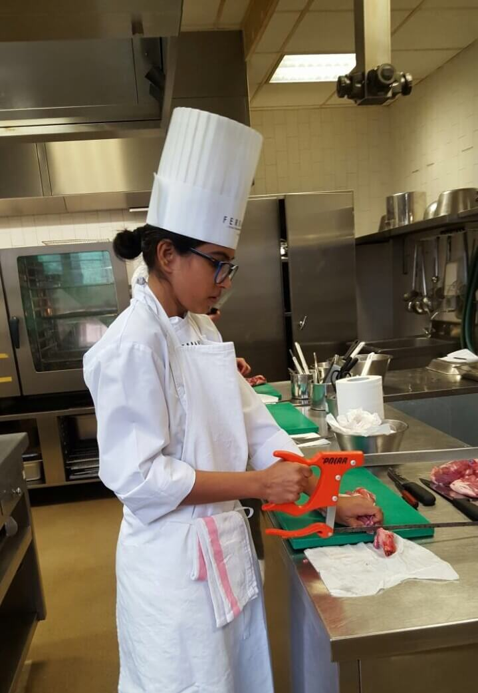

As long as I remember I have loved big family dinners. Food can be a great way to bond with family and friends. It can also be an escape into something exotic and new. I found my true passion for cooking when I started creating exotic food for my family and friends. This interest to cook took me to Paris where I attended a culinary school, Ferrandi and trained to become a professional Chef. My hunger to learn also took me to work at Michelin and Bib Gourmet restaurants like Fäviken in Sweden and Kokoro in Paris.
In 2017 I started myhomebistro in order to make my passion into my living. With myhomebistro I provide the opportunity for everyone to experience fine dining at your own home. I believe that some of the most exquisite tastes in cooking come from local and seasonal produce. And I am passionate about bringing the natural tastes into my food. This is best described in my favourite movie Burnt.
“It was God who created oysters and apples. And you can’t improve recipes like that. But it’s our job to try.”
Shikha